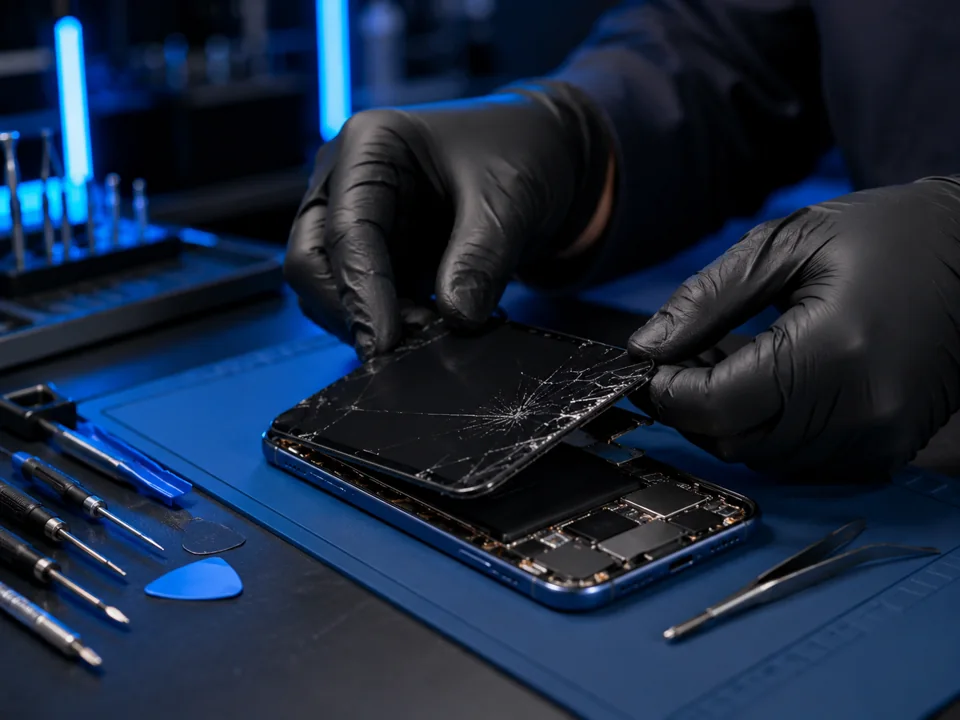
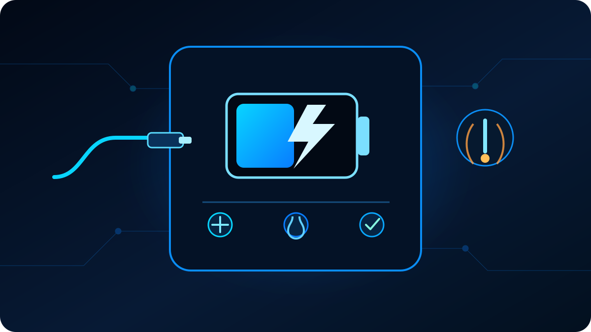
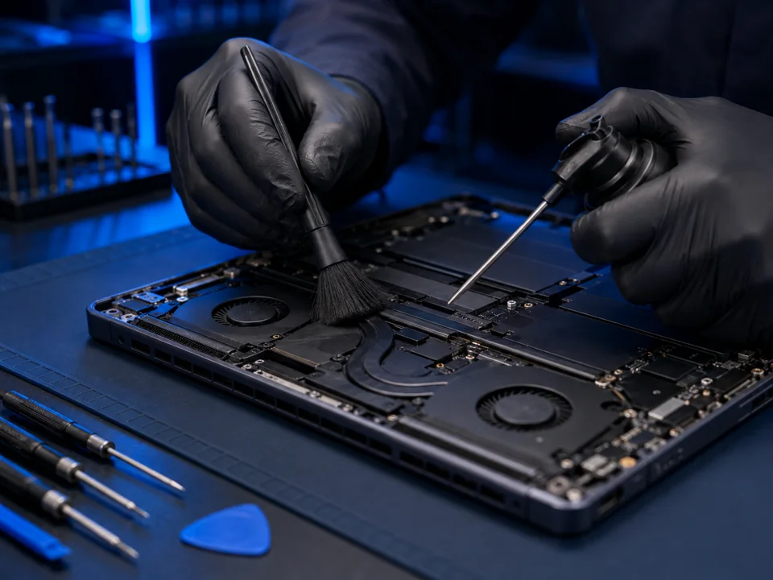

01
Screen & device repair
Displays, batteries, charging ports, cameras, speakers, buttons, liquid damage, consoles, and more.
Device repair, without the runaround
Phones, tablets, computers, consoles, cleanings, tune-ups, custom PC builds, malware removal, and more—handled clearly by people who care about getting you reconnected.
One repair partner for all your tech
Everything we do
From a simple cleaning to a custom gaming PC, we diagnose clearly, explain the options, and help you make the smartest next move.
Displays, batteries, charging ports, cameras, speakers, buttons, liquid damage, consoles, and more.
Not sure what failed? We identify the likely cause and explain practical repair options before work begins.
Careful exterior, port, vent, fan, and internal cleaning for eligible phones, computers, and consoles.
Startup cleanup, updates, storage checks, performance review, and practical recommendations for a smoother system.
Planning, parts guidance, professional assembly, cable management, setup, testing, and upgrade paths.
Threat cleanup, unwanted software removal, browser repair, security review, and steps to reduce reinfection.
We assess accessible drives and devices and attempt responsible recovery when appropriate. Results are never guaranteed.
Restore dependable battery life on eligible phones, tablets, laptops, and other devices.
Returning customer? Ask about frequent-repair savings on eligible services. Tell us what you need →
Common repair symptoms
Tell us what changed, what the device is doing, and when it started. You do not need to diagnose the failure yourself—we confirm the repair path before billable work begins.
Professional diagnostics
Screen damage, charging problems, heat, battery issues, and no-power faults can overlap. We document what is happening, inspect the device, and explain the practical next step.

Phones & tablets
Black spots, colored lines, flickering, dead touch areas, sharp glass, or spreading cracks are all good reasons to have the device inspected.
We identify which display components are affected and confirm the available repair options before work begins.

Battery & power
Battery wear and power faults can create similar symptoms, so we verify the cause before recommending replacement.
If a battery appears swollen or the device becomes unusually hot, stop using and charging it and have it evaluated promptly.

Laptops & computers
Cooling, storage, hardware, and software problems can feel very similar from the outside.
We look at the symptoms and overall system health, then explain whether cleaning, repair, upgrade, or software service makes sense.
Game consoles
Loose or damaged video connections can cause no picture, flickering, dropouts, or intermittent signal.
We inspect the connection and related circuitry, then confirm whether the issue is the port or another part of the video path.
Blacksburg & campus life
Tell us about class deadlines, travel dates, remote-work needs, or other timing constraints so we can give you realistic options before the repair begins.
General customer guidance only. Actual repair needs, parts, pricing, and turnaround are confirmed after inspection.
A better repair experience
Every repair moves through one clear workflow, so you always know what is happening and what comes next.
Book online or stop in. We capture your device and the issue.
We confirm the fix, timing, and price before repair work begins.
Track approval, parts, repair, and testing from your customer link.
We notify you when your device passes testing and is ready.
Repair from anywhere
Start with an online request before sending your device. We confirm that the repair is a good fit, provide your request number and packing guidance, then keep inbound, repair, and return-shipping progress together.
Tell us the device and issue. Wait for confirmation before shipping.
Use protective packing and include your GotCracked request number. Send accessories only when requested.
We inspect the device and send a clear estimate before billable repair work begins.
Return shipping, insurance, and any applicable charge are documented on your work order.
Why GotCracked
A good repair is more than a working device. It is honest advice, clear communication, and confidence that the job was done right.
No surprise work. You approve the estimate first.
Your device, service, and warranty details stay organized.
Every completed repair is checked before pickup.
Questions are answered by people who understand the work.
Start a repair
Share a few details. We will review the issue and contact you to confirm timing and next steps.
Your information stays private.
Never include a device passcode in this form.
Good questions
Still unsure? Start a request and tell us what you are seeing. We will help you choose the right next step.
Ask about a repairMany common repairs can be completed the same day. Timing depends on diagnosis, device model, parts availability, and your approval. We confirm the expected turnaround before work begins.
Yes. After diagnosis, you receive a clear estimate. Work begins only after you approve it.
Back up important data when possible and bring any accessories related to the problem. Do not submit passwords or passcodes through this website.
Eligible repairs include a six-month workmanship warranty. Coverage depends on the service and parts used, and your final service record identifies the terms for your repair.
We can evaluate many accessible drives and devices and attempt recovery when appropriate. Data recovery is highly dependent on the device and damage, so no amount or outcome can be guaranteed.
Frequent-repair savings may be available on eligible services. Ask the shop to apply the current offer to your work order.
We service many phones, tablets, computers, and game consoles. Submit your model and issue and we will confirm service availability.
Yes, after we approve your mail-in request. Do not ship before confirmation. Securely pack the device, include the request number, and send it to GotCracked, 700 North Main St, Ste D, Blacksburg, VA 24060. Return shipping and insurance are documented on the estimate or work order.
Yes if the crack is spreading, glass is sharp, touch is unreliable, or the display develops lines, spots, or flickering. We can confirm which part of the display assembly is affected.
Bring the device and, when practical, the charger or cable you normally use. Charging trouble can come from more than one component, so we confirm the cause before recommending repair.
Stop using and charging the device and have it evaluated promptly. Do not press the enclosure closed or puncture the battery.
Power the device down and avoid repeatedly turning it on or charging it. Bring it in for evaluation so we can assess the extent of the damage.
Not always. Walk-ins are welcome, and appointments are useful when you want to reserve a time window. For mail-in service, submit a request and wait for approval before shipping your device.